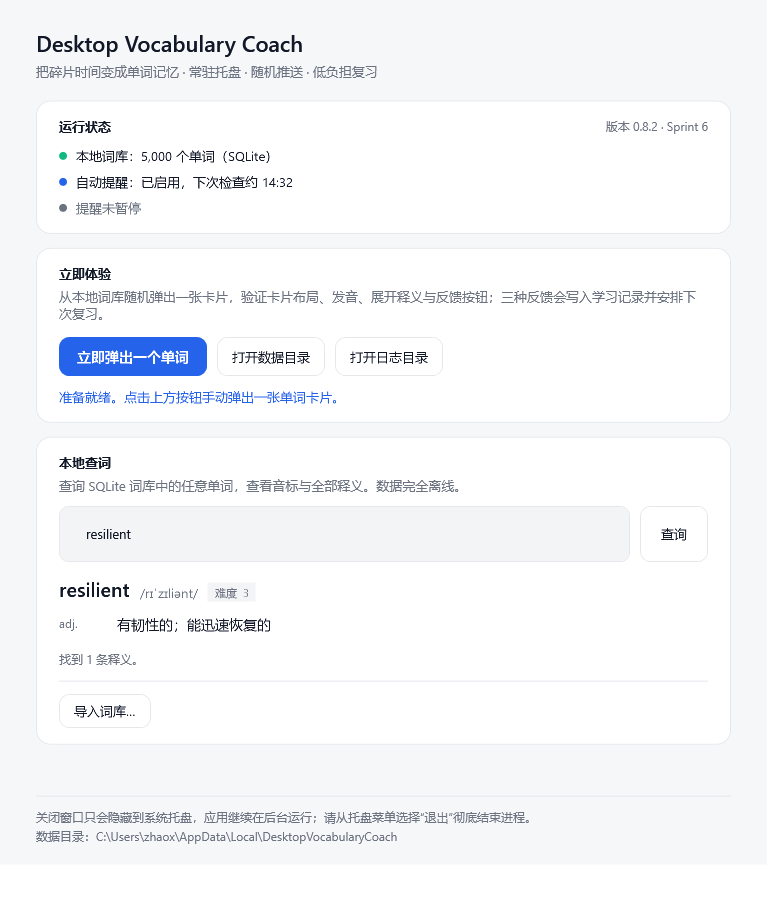
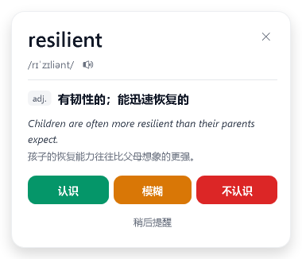
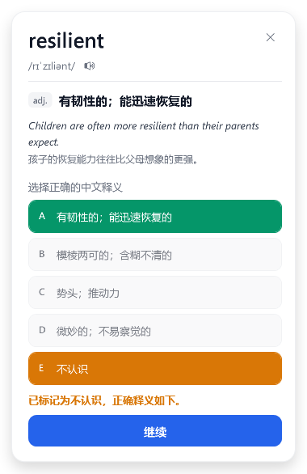
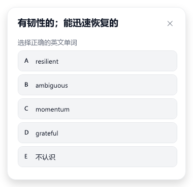
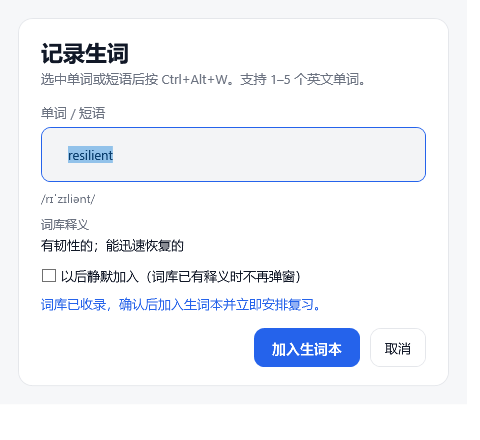
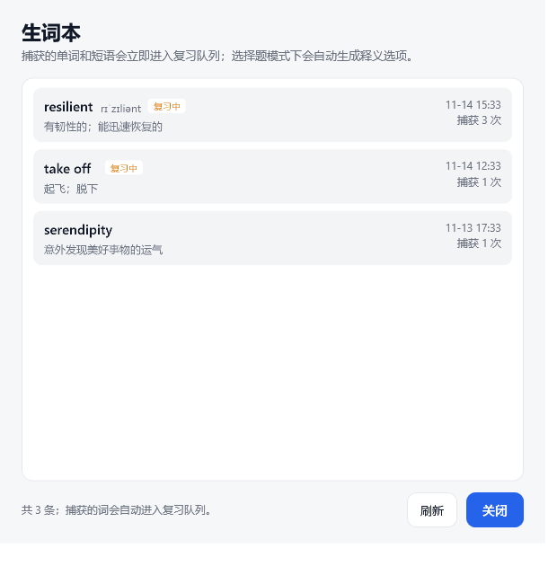
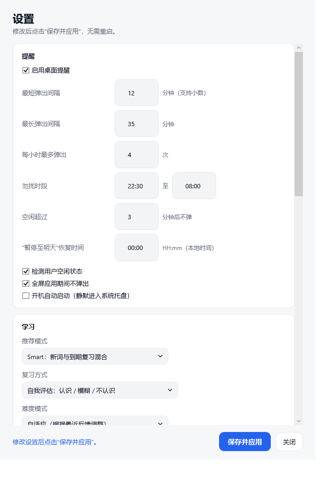
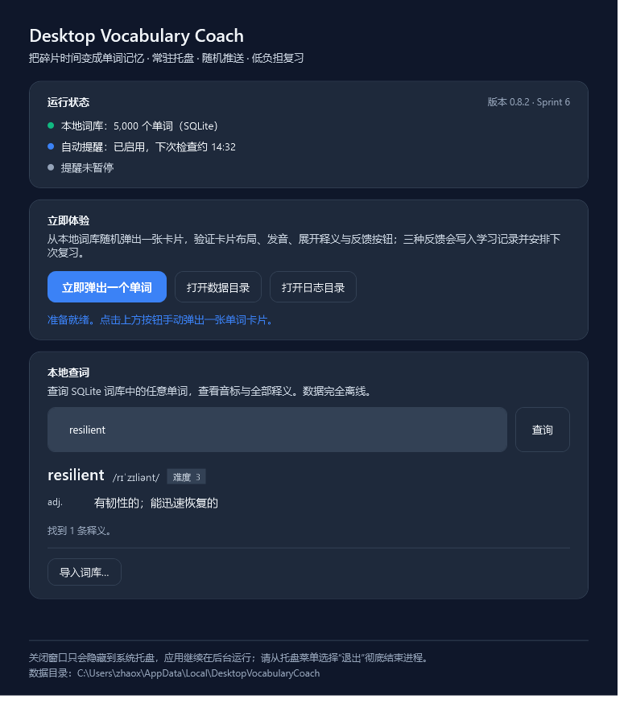
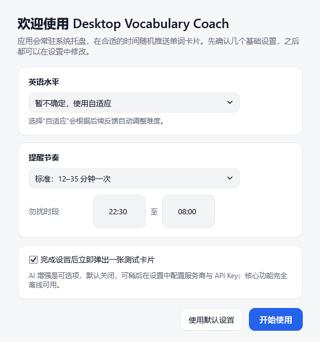

随机而不打扰
12–35 分钟随机间隔、每小时上限、勿扰时段；全屏、空闲、锁屏时自动安静等待。
常驻系统托盘的英语单词教练。每隔一段时间随机弹出一张轻量卡片， 用「认识 / 模糊 / 不认识」或「看词选义 / 看义选词」快速反馈，系统自动安排下一次复习。
SHA256 —
下载地址尚未配置。部署前请在 config.js 中填写 downloadUrl。

低打扰、可解释、完全本地。每一个设计都围绕「持续接触 + 主动回忆」。
12–35 分钟随机间隔、每小时上限、勿扰时段；全屏、空闲、锁屏时自动安静等待。
认识拉长间隔，模糊短间隔，不认识尽快重学；反馈事务化落库，关闭卡片不会被误记为已掌握。
看英文选中文，或看中文选英文；A–D 四选一，也可以选 E：不认识。答对/答错直接写入复习进度。
在浏览器、邮件、Office 中选中单词或短语，按 Ctrl+Alt+W 加入生词本，立即进入复习队列。
内置常用英汉词库（ECDICT，MIT），含音标、难度、词频与中文释义；支持 JSON/CSV 导入。
支持 OpenAI、Anthropic、Gemini、DeepSeek、Moonshot、通义千问、智谱等兼容接口；关闭时核心功能完全离线。
无需账号、不上传学习记录；SQLite 保存在本机，AI Key 使用 Windows DPAPI 加密。
浅色/深色即时切换；PerMonitorV2 DPI，卡片出现在鼠标所在屏幕的右下角。
无边框、置顶、不抢焦点。卡片会在你正在做的事旁边安静出现。








按用户安装，无需管理员权限；学习数据保存在本地应用数据目录，升级与卸载不会误删。
选择英语水平、提醒节奏与勿扰时段。应用会创建本地词库并常驻系统托盘。
等待随机卡片，或从托盘选择「立即弹出一个单词」。选中任意应用中的生词，按 Ctrl + Alt + W 记录。
%LocalAppData%\DesktopVocabularyCoach\vocabulary.db
· 日志在 logs\，AI Key 在 ai.key（DPAPI 加密）。
卸载只删除程序文件与快捷方式，学习数据默认保留。
核心学习功能完全离线。没有账号体系、没有云同步、没有行为分析脚本。
不需要。安装包包含自包含的 .NET 10 运行时，支持 Windows 10/11 x64。
安装包未购买代码签名证书，SmartScreen 会对新发布者提示。可核对页面上的 SHA256 后再运行。
不必须。AI 仅用于例句、简释与易混词提示，默认关闭；失败或断网时自动使用本地词库。
Windows 10 与 Windows 11（x64）。暂不支持 ARM64 与 Windows 7/8。
设置 → 数据 → 备份数据库；也可以直接复制 %LocalAppData%\DesktopVocabularyCoach\vocabulary.db。
从「设置 → 应用」卸载即可删除程序与启动项；如需清理学习数据，再手动删除 %LocalAppData%\DesktopVocabularyCoach。
免费、离线、不打扰。Windows 10/11 x64。
下载 Desktop Vocabulary Coach